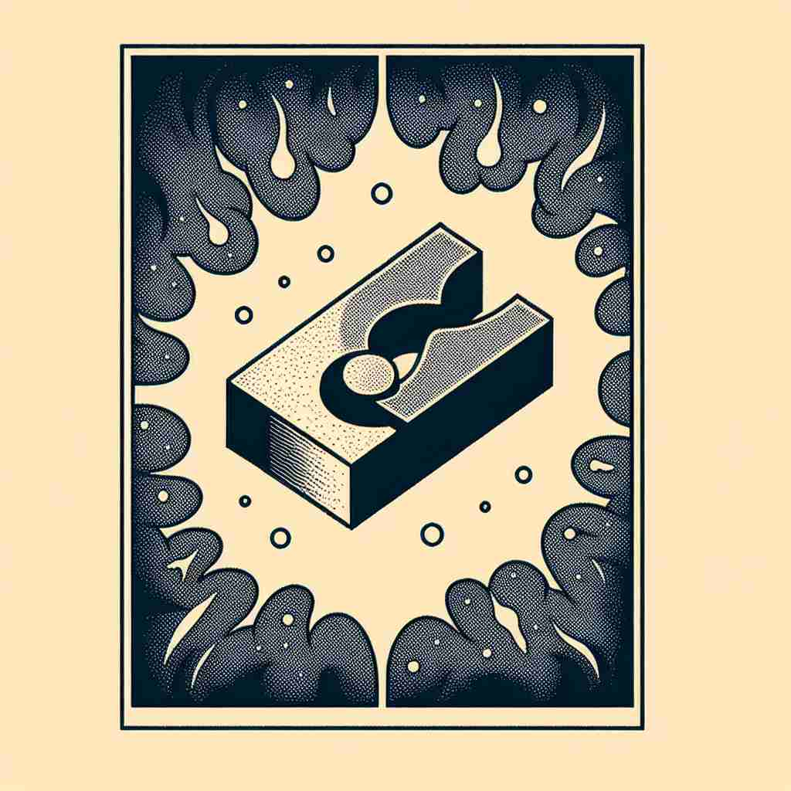

💬 The fusion of ice and fire creates a beautiful transformation. 冰与火的融合创造出美丽的变幻。

💬 The festival celebrates the cultural fusion of different traditions. 这个节日庆祝了不同传统的文化融合。
💬 The fusion of ice and fire creates a beautiful transformation. 冰与火的融合创造出美丽的变幻。
💬 The festival celebrates the cultural fusion of different traditions. 这个节日庆祝了不同传统的文化融合。
🧠 fusion 的核心含义是'融合'或'合并'。想象两个或多个事物融化后重新凝固在一起，这个画面可以帮助你理解 fusion 在各个领域的应用。无论是烹饪、音乐、艺术还是核物理，fusion 都表示将不同元素结合成一个新的整体。记住这个核心概念，你就能轻松理解和记忆 fusion 的各种用法。
🔈 ['fjuːʒ(ə)n]
🗝️ n. the process or result of joining two or more things together to form a single entity 将两个或多个事物结合在一起以形成一个整体的过程或结果
🎭 在一个艺术工作坊现场，几位艺术家正在共同创作一幅大型壁画。他们将不同风格的画作通过颜色和线条相互融合，最终呈现出一幅和谐统一的图案。这完美地体现了'fusion'的过程——将多个元素结合为一个单一实体。
💬 The fusion of hydrogen atoms in the sun releases enormous energy. 太阳中氢原子的融合释放出巨大的能量。
🌳 词根 'fus' 来源于拉丁语 'fundere'，意为 '流动，熔化'。后缀 '-sion' 表示动作或状态。'fusion' 的字面意思是 '融化后结合'，即 '融合'。
💡 可以将 'fusion' 联想为 'melt and mix'（融化并混合）。通过这种联想，理解为将不同元素结合成一个整体的过程。
🗝️ n. a style of cooking that combines elements from different culinary traditions 一种融合不同烹饪传统元素的烹饪风格
🎭 在一个现代餐厅的开放厨房中，厨师正在准备一道创意料理。他将亚洲调料与意大利面完美结合，创造出一道独特的美味，客人们惊喜地享受着这种独一无二的美食体验。这就是'fusion cuisine'，结合不同烹饪传统的风格。
💬 The restaurant specializes in Asian fusion cuisine. 这家餐厅专注于亚洲融合菜。
🤔 将不同烹饪传统"融合"在一起
🗝️ n. a type of music that blends different styles 一种融合不同风格的音乐
🎭 在一个热闹的音乐节上，乐队正在演奏富有节奏感的音乐。你可以听到爵士与摇滚的节奏完美交融，乐迷们热情地随着音乐摇摆。这种音乐被称为'fusion'，因为它将多种音乐风格融为一体。
💬 Jazz fusion incorporates elements of rock and funk. 爵士融合音乐融合了摇滚和放克的元素。
🤔 将不同音乐风格"融合"
🗝️ n. the merging of different elements into a unified whole 将不同元素融合为一个统一的整体
🎭 在一个创新科技展会上，工程师们正在展示他们最新设计的智能设备。这个设备将通讯、娱乐和健康监测功能集成在一个设备中，为用户提供无缝的体验。这体现了'fusion'，将不同的元素合并成一个统一的整体。
💬 The artist's work represents a fusion of Eastern and Western aesthetics. 这位艺术家的作品代表了东西方美学的融合。
🤔 将不同元素"融合"成一个整体
🗝️ n. the process of causing atomic nuclei to join together to form heavier nuclei 使原子核结合形成较重原子核的过程
🎭 在一个高科技的研究实验室中，科学家们正在进行尖端的核聚变试验，试图将轻原子核结合成较重的核。实验室中，复杂的仪器不断闪烁着，彰显出核'fusion'的过程和能量释放的壮观景象。
💬 Scientists are researching nuclear fusion as a potential energy source. 科学家正在研究核聚变作为一种潜在的能源来源。
🤔 原子核"融合"形成更重的核